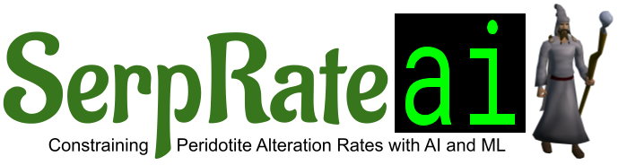
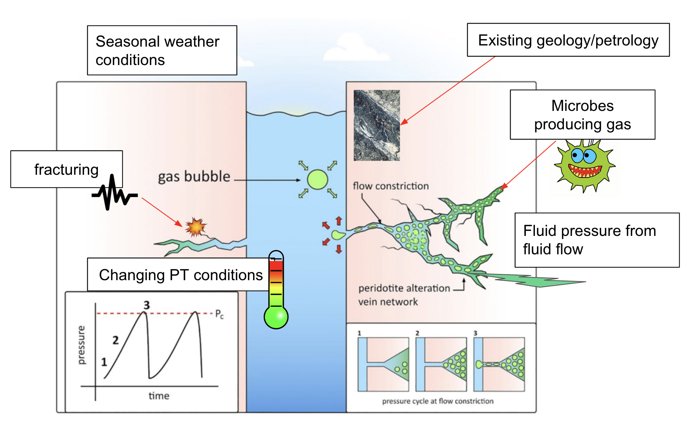

SerpRateAI is a Terratronics AI Labs project funded by the Norwegian Research Council (No. 334395) to investigate the physical mechanisms that drive peridotite alteration.
Project Partners


 Expert Analytics
Expert Analytics
Project Summary

Climate change is having lasting effects such as changing ocean acidity, temperatures, and heights, increasing the chances of natural hazards such as forest fires and hurricanes, and leading to the disappearance of water sources supplied by glaciers and snow. Carbon dioxide (CO2) produced by humans is a primary contributor to man-made climate change thus finding storage mechanisms for human produced CO2 is necessary to mitigate climate change. Mantle rocks, like peridotite, offer a storage option for CO2, in the presence of water, peridotite will alter into new kinds of rocks. If CO2 is present in the water this CO2 will be stored as a solid in the rocks, keeping it trapped underground forever. Currently this chemical alteration process is well understood however the physical process that allows water to reach unaltered peridotite is not. SerpRateAI will discover the physical processes that allow water to be pumped underground to understand how peridotite alters. Ultimately we will produce natural alteration rates, i.e., how fast the rock changes over time. This can be used to estimate how much CO2 we can store in a region. Given that mantle rocks like peridotite are common, this could feasibly be used to store a large fraction of human produced CO2.
Approach
We have three step approach:
- Work Package 1: Building time series data sets from acoustics, temperature, pressure, and other loggers deployed into the multi-borehole observatory
- Work Package 2: Build depth wise database of geological features found in the multi-borehole observatory including a fracture network database for cored boreholes, summarization of expert reports, and other physical, chemical, and biological measurements
- Work Package 3: Build AI/ML models that analyse and understand ongoing processes such as carbonation, fluid migration, and cracking
Papers
AI pipeline for ingesting data from a borehole
JGR: Machine Learning and Computation
In-situ, acoustic observations of downward migrating breakout swarms in a peridotite borehole
JGR: Solid Earth
Gas Migration Episodes Observed During Peridotite Alteration in the Samail Ophiolite, Oman
Geophysical Research Letters
The website template was borrowed from Jon Barron.